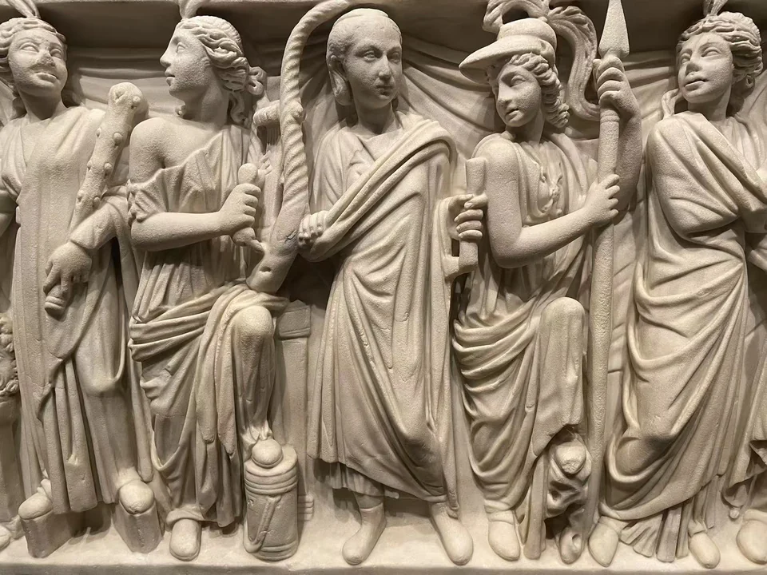
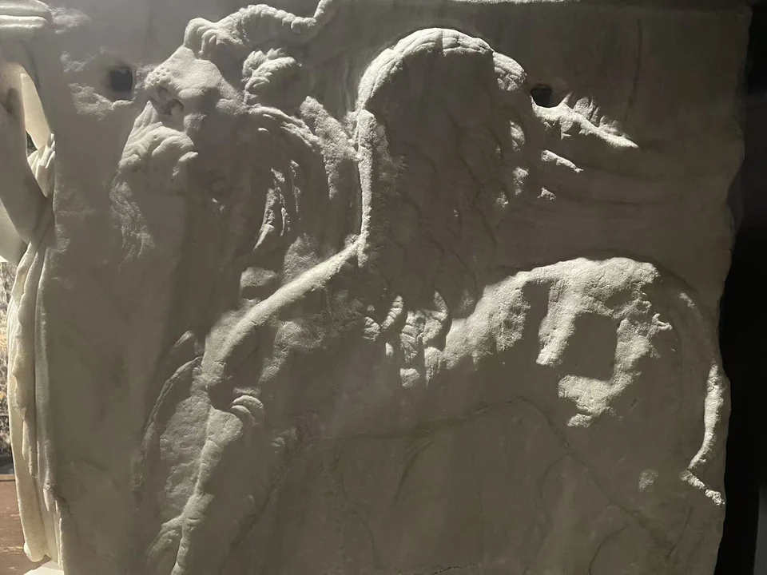
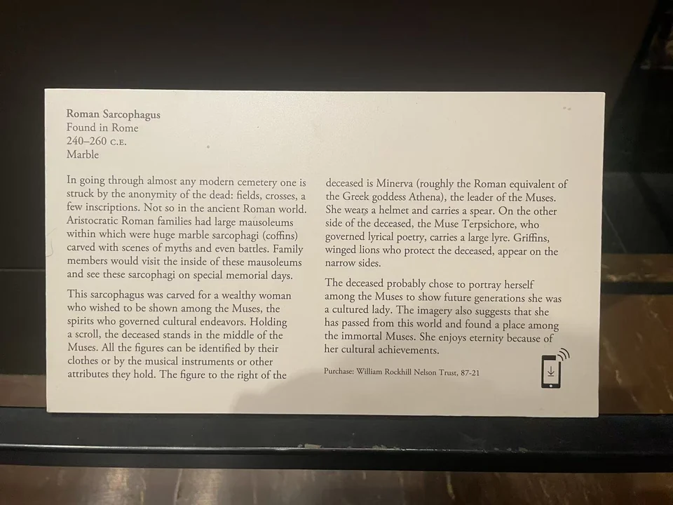

ROMAN SARCOPHAGI / R15
亡者与缪斯石棺
一位持卷的女性站进缪斯之间，纪念由她的面容，也由她选择的陪伴者构成。

- 年代
- 240–260年
- 材料
- 大理石
- 收藏
- 纳尔逊—阿特金斯艺术博物馆
- 观看地点
- 纳尔逊—阿特金斯艺术博物馆 · 堪萨斯城
- 馆藏号
- 87-21
- 发现地记录
- 罗马Vigna Casali，1872年
先找卷轴与头盔
中央女性持着卷轴，身旁戴头盔、持长矛的是密涅瓦。再向两侧看，乐器、面具与其他持物把各位缪斯区分开。衣褶深处的阴影让一排立像有了起伏；侧面狮鹫的翅膀与足爪，又把正面的文化世界转为墓葬的守护形象。 [21]




她希望怎样被记住
馆方把这组陪伴解释为墓主文化修养的表达。我们仍不知道她的姓名或是否实际从事某种文艺活动，但图像清楚地让她在这些神圣人物之间拥有位置。馆藏记录记载石棺1872年在罗马Vigna Casali发现，1987年由纳尔逊购入。 [21]
现场展签 · 1张

资料与来源
断代、收藏与文献说明
馆方现行目录与旧展牌对个别缪斯职掌的说法不尽一致；人物持有的卷轴、头盔、乐器与面具，为比较这些解释提供了线索。 [21]